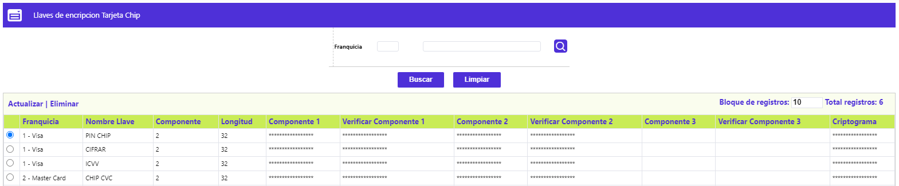

Ingreso llaves de encripción
Esta función registra en el sistema las llaves que se utilizan para tarjeta chip. Estas llaves son compiladas y almacenadas en una librería especial, las cuales son tomadas por las rutinas que calculan las llaves para tarjetas chip. Esta opción cuenta con los enlaces de: Actualizar y Eliminar.

Actualizar: Si el usuario invoca la opción Actualizar se despliega un formulario en el cual todos los campos son modificables.

|
Franquicia |
En este campo provee de una lista de valores poblada previamente en la opción franquicias de las tablas reservadas del módulo núcleo, de la cual se selecciona la marca del producto sobre el cual operarán los parámetros. |
|
Nombre Llave |
Indica el tipo de llave que se modificará. |
|
Componentes |
Cantidad de componentes que comprende la llave. |
|
Longitud |
Longitud de cada uno de los componentes. |
|
Componentes |
Campos Exadecinales se debe digitar la llave secreta otorgada por la central autorizadora para la emisión de nueva tarjetas. Dada la calidad de la información, se adecuá la captura para que no sea visible en pantalla el número de llave ingresada. |
|
Verificaciones |
Una vez definida la llave, en estos campos se debe capturar la misma información para efectos de validación de la misma con el campo inmediatamente anterior. Si se encuentra algún tipo de diferencia, se reinicia la captura. |
|
Criptograma |
Este es la llave definitiva al aplicar XOR con cada uno de los componentes. |